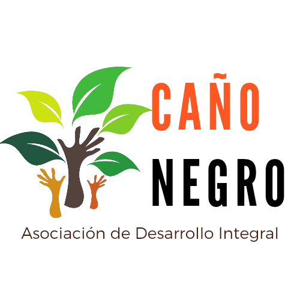
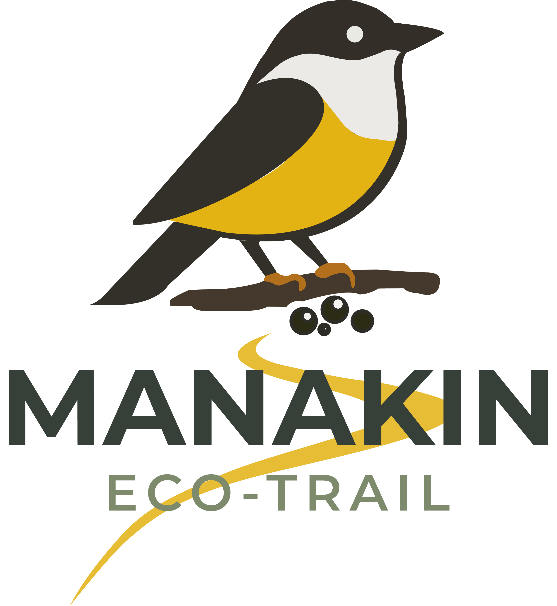

Naturaleza, senderismo y conservación
Recorre senderos rodeados de bosque, humedales y vida silvestre, en un entorno donde cada paso invita a descubrir la riqueza natural de Caño Negro.
Caño Negro, Los Chiles, Alajuela
Antes de iniciar tu recorrido, toma en cuenta algunas recomendaciones para disfrutar de una experiencia segura, consciente y respetuosa con la naturaleza.
Utiliza calzado cómodo, lleva agua, protector solar y ropa adecuada para caminar en un entorno natural.
Respeta la flora y la fauna, no dejes residuos y ayuda a proteger el equilibrio del ecosistema.
Lleva cámara o binoculares para disfrutar mejor del paisaje, las aves y los detalles del entorno.
Un recorrido pensado para conectar con los paisajes, la flora y la fauna del Refugio de Vida Silvestre Caño Negro.

Conoce el sendero Eco Drive, una experiencia para recorrer de cerca los paisajes, la biodiversidad y los atractivos naturales de Caño Negro. Encuentra toda la información, fotos y detalles del recorrido en su página oficial.
Conocer Eco DriveSe ubica en Los Chiles, Alajuela, Costa Rica, cerca de la frontera con Nicaragua.
Puedes acceder por la Ruta 138 desde Upala o Los Chiles. Usa el botón de ubicación para ver la ruta.
Más de 300 especies de aves, además de reptiles, mamíferos y una gran diversidad de flora.
Durante la estación seca para senderismo, o época lluviosa para ver aves migratorias.
Ropa cómoda, repelente, agua, cámara y protección solar.
Cambiando idioma...